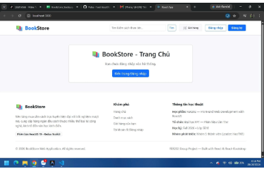
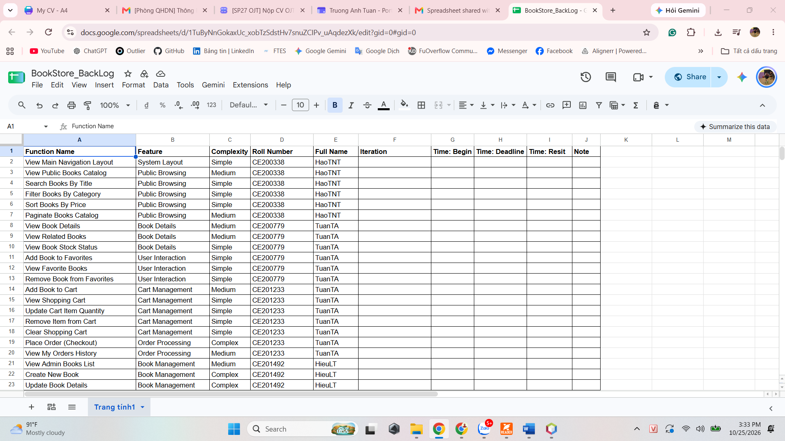
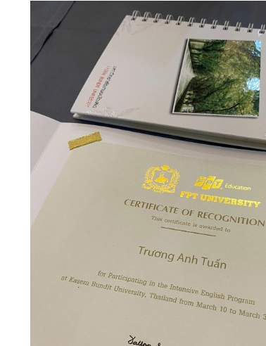

J
Java
Servlet · JSP · MVC
SOFTWARE ENGINEERING STUDENT · FPT UNIVERSITY
Third-year Software Engineering student with academic project experience in Java, JavaScript, ReactJS, SQL Server, and web application development. Practiced building web features, integrating REST APIs, and implementing user authentication and role-based access.

A LITTLE ABOUT ME
I am a third-year Software Engineering student at FPT University - Can Tho Campus, with foundational knowledge of Java, JavaScript, ReactJS, SQL Server, and web application development. Through academic projects, I have gained hands-on experience building web features, integrating REST APIs, and implementing user authentication and role-based access.
I am seeking an OJT opportunity in software development to apply my programming fundamentals, logical thinking, and teamwork while building, testing, and improving software features with a technical team.
TOOLS & TECHNOLOGIES
Technologies and concepts I have practiced in academic projects.
Servlet · JSP · MVC
ES6 · Async API calls
Router · Redux Toolkit
Queries · Database operations
Web page structure and styling
Axios · HTTP GET/POST
Programming fundamentals
Version control in team projects
SELECTED ACADEMIC WORK
A selection of team projects and my individual contributions.


Online Bookstore Web Application · FER202
A team-built web application for browsing books, viewing book details, submitting reviews, and related bookstore features.
/books/:id) and useParams().createAsyncThunk to fetch book details and handle asynchronous API requests.

Movie Ticket Booking System · PRJ201
A Java Web MVC application for movie browsing, seat selection, ticket booking, and administrative management.


Requirements Analysis & Documentation · SWR302
A hotel management system concept covering room reservations, front-desk operations, housekeeping, staff management, room pricing, and operational reporting.
Project focus: software analysis and documentation; not presented as a coding project.


Scrap Collection & Fundraising Project for Orphans · SSG105
A proposed 10-week community initiative to collect and sort recyclable materials, including plastic bottles, cartons, and aluminum cans, to raise funds for orphaned children in Can Tho City. The project combines environmental awareness with charitable support by using proceeds from recyclable sales to fund essential supplies, books, and food.
Key focus areas: research & planning, sustainability, teamwork, and visual communication.
BACKGROUND
2024 - Present
Software Engineering
Mar 10 - 31, 2025
Intensive English Program
FREELANCE EXPERIENCE
Outlier · Remote · Jun 10 - Jul 14, 2026
CERTIFICATES & RECOGNITION
Academic and learning achievements.

2025CERTIFICATE OF RECOGNITION
Kasem Bundit University · Thailand
Certificate of Recognition awarded to Truong Anh Tuan for participating in the Intensive English Program.
March 10–31, 2025
GET IN TOUCH
I am open to OJT opportunities and learning experiences in software development.